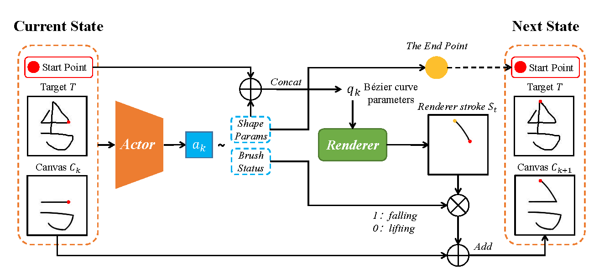

Overview of Sketching Agent drawing a target sketch. In the inference process, the agent outputs stroke parameters according to the current start point and the canvas at each time. The renderer maps the strokes to the canvas.
在这里，行内数学公式 `$\dashrightarrow$` 就会被渲染成虚线箭头了：
… The renderer maps the strokes to the canvas. The $\dashrightarrow$ indicates …